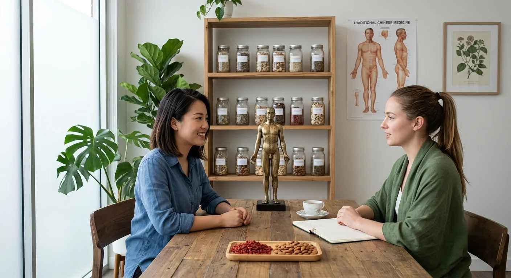
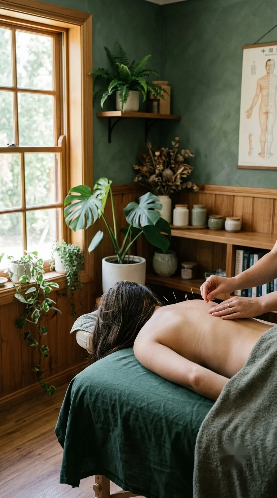
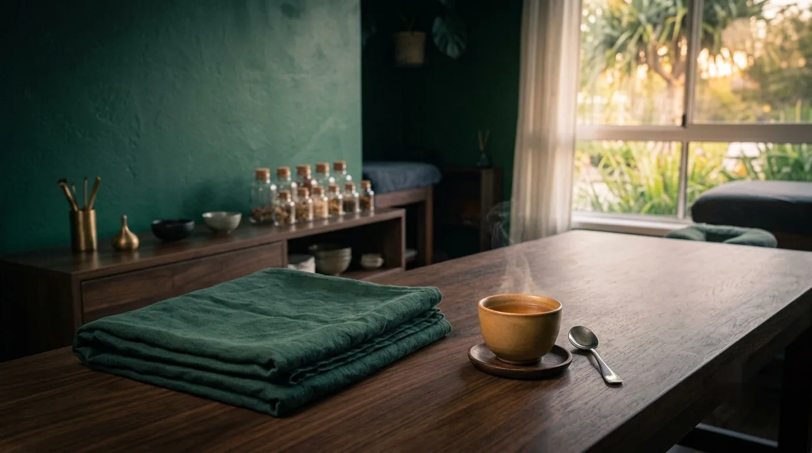

60 minutes · returning clients
Your Follow-Up Visit
A focused session to check your progress and continue your treatment plan.

- Duration
- 60 minutes
- Best for
- Returning clients
- Hours
- Tue 12–5pm
- Where
- Mermaid Beach
The appointment
An hour at Ānshén Acupuncture in Mermaid Beach to check in on how you've been, and to keep your treatment plan moving with you.
Follow-up acupuncture appointments are 60 minutes and focus on reviewing your progress and continuing your personalised treatment plan.
Each session includes acupuncture and, where appropriate, adjunct techniques such as cupping, moxibustion or gua sha can be added.
What's included
- A proper check-in on how you've been since your last visit
- Treatment adjusted to where your body is today, not a repeat of last time
- Your acupuncture treatment, continuing your personalised plan
- Additional techniques like cupping, moxibustion or gua sha, if they'll help
Treatments are provided by an AHPRA-registered practitioner.


Good to know
Common questions.
Do I need an initial appointment first?
Yes. Follow-up appointments build on the history and assessment completed at your initial consultation, so we ask that new clients start there. It means your treatment plan is grounded in a full picture of your health, not just the day's symptoms.
How often should I come in?
It depends on you and what we're working on. We'll suggest a rhythm after your initial appointment and review it as we go. Some people prefer weekly visits while working through something specific, others settle into a monthly check-in once things feel more stable.
Will the treatment be the same each time?
No. Each appointment starts with a check-in, and treatment is adjusted to where your body is on the day. Points, pressure and any adjunct techniques can all shift from one session to the next.
How long between appointments?
That varies. We'll talk through what makes sense for you rather than applying a fixed schedule. Spacing often settles somewhere between weekly and monthly, depending on what you're working on.
Can I add cupping to a follow-up?
Cupping, moxibustion or gua sha can be included where appropriate for your treatment plan. Mention it at your appointment and we'll discuss it.
Designed to help you feel at ease
Ready when you are.
There's no need to have it all figured out before you arrive. Every follow-up starts with a check-in, so treatment can adjust to how you're doing today, not just repeat what came before.